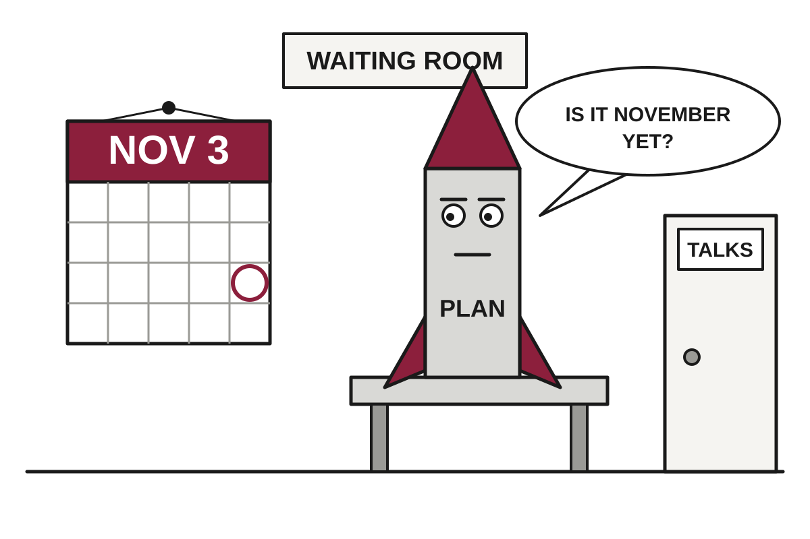

5 Things in 60 Seconds
- The U.S. and Israel have reportedly drafted plans for a short but intensive strike on Iran's nuclear, energy and missile sites, timed to come after the November 3 midterms, so the war's next phase is waiting on the voters it is making unhappy.
- Nigeria confirmed its first case in the current Ebola outbreak, a stable Swiss national in Abuja with 44 contacts identified, while Switzerland, Uganda and Nigeria disagree on where she has been.
- Two critical PHP flaws found by AI after a decade unnoticed led governments from Finland to the UK to take websites offline, which does secure them in the narrowest sense.
- Brent crude rose 2.6% to $116.13 on Friday, a six-month high, as traders bet the U.S. will resume strikes on Iran, paying now for a disruption that has not happened yet.
- Brazil heads to a presidential run-off on October 25 between Lula and Flavio Bolsonaro, who led the first round 47% to just over 45%, so the country gets a second election to settle the first.

U.S. and Israel Draft Iran Strike Plans, Politely Scheduled Around the Midterms
Reports say Washington and Jerusalem have a 'short but intensive' operation ready, while two elections and a stalled negotiation decide when the 'short' part begins.
The wire said: What we know about war plans that Trump and Netanyahu are drawing up · NPR World
The United States and Israel have developed specific plans for a short but intensive operation in Iran, the New York Times reported Wednesday, citing senior U.S. officials. Targets would reportedly include nuclear facilities, energy infrastructure, and Iran's stockpile of missiles and drones. The plan is not scheduled for before the American midterms on November 3, which is a coincidence in the sense that calendars are a coincidence.
On October 8, according to DW, President Trump posted that the U.S. would not attack Iran before the midterms, citing 'productive discussions' with Tehran. Polls show high energy prices from the war are hurting his Republican Party. Translation: the war has made gasoline expensive, and voters have noticed, so the next phase of the war will wait until they have finished noticing.
Geopolitics

Ebola Reaches Nigeria, and Three Governments Now Disagree on Where the Patient Has Been
Switzerland says the woman never went to Congo, Uganda says it has no active cases, and investigators are studying one airport on one day in October.
Nigeria confirmed its first Ebola case of the current outbreak this week, in the capital, Abuja. By Friday, the main question was not how the patient was doing, which health officials describe as stable, but where she had been, which three governments are describing differently.
The patient is a Swiss national of Ugandan origin, married to a Swiss diplomat posted in Abuja. According to DW, Nigerian Health Minister Muhammad Ali Pate said she developed symptoms on 7 October, visited a private clinic on 11 October, and was later confirmed positive and isolated. Officials have identified 44 contacts, including health workers and caregivers.
Brazil Votes Twice in One Month to Decide Whether It Meant It the First Time
Lula trails Flavio Bolsonaro by a few points or fewer in run-off polls, with the margin of error doing most of the work.
Israel Razes Hebron Buildings After Checkpoint Attack, Four Days Before an Election

Two Israeli soldiers were killed at a West Bank checkpoint; Prime Minister Netanyahu promised to demolish the attackers' neighbourhood and said he had reviewed plans for the largest West Bank operation in decades.
First Lady Announces Oleshky Truce, Giving Both Armies a Reason to Check Their Calendars

The White House says Melania Trump secured a localised ceasefire in the occupied Ukrainian city, and Moscow and Kyiv confirmed it, though neither has said when it starts or how long it lasts.
Elsewhere on the wire
Deadly shooting near Paris investigated as 'crime of terrorism', minister says BBC WorldCarrick accepts blame for Man United slump, but ‘confident’ of a turnaround Al JazeeraAfghan women could lose one of their last paths to a higher education DWSix shot dead by gunmen at church funeral in Jordan, officials say BBC WorldLewis Hamilton aims to extend career till early 2030s so he can race in African Grand Prix The GuardianUkraine tries to shut Moscow's airports with drone strikes on Russia DWAI

US Bans DeepSeek From Federal Computers; Investors Respond With $15 Billion
Two days after Washington ordered civilian agencies to remove the Chinese AI lab's technology, Bloomberg reports it raised roughly 100 billion yuan.
Two days after the United States ordered federal civilian agencies to remove DeepSeek's AI technology from their systems over security concerns, the Chinese AI lab raised about $15 billion, or roughly 100 billion yuan, Bloomberg reported, as relayed by TechCrunch. It is described as one of the largest funding rounds in China. As deterrents go, a ban that is followed within 48 hours by a nine-figure-times-one-hundred cash infusion is a gentle one.
According to the report, potential investors include battery maker CATL and Tencent, the company behind WeChat, among others. Translation: a company that makes batteries and a company that makes a messaging app have both looked at a language-model lab and concluded they want in. That is what an investment boom looks like from the inside.
Microsoft Says Its AI Out-Diagnoses Doctors, Pending Contact With Actual Patients

A study in Science reports the system hit 83 percent on hard cases versus 36 percent for generalist physicians, but the doctors had one hand tied and the patients were all on paper.
AI Agents Now Hack Faster Than Humans Can Read the Alert

Chinese hackers, a decade-old PHP bug and a hijacked chatbot all point to the same thing: attackers have automated, and defenders mostly have email.
Meta Delays Terms Publishers Say Permit Scraping, Insists Terms Do Not Permit Scraping

The company pushed enforcement from October 30th to November 20th after publishers and lawyers objected, giving it three more weeks to explain a document it says is not about what critics think it is about.
Elsewhere on the wire
Uber rival inDrive eyes 2027 robotaxi tests in Central Asia with Pony.ai and Nvidia TechCrunch AIThe Download: testing six tech promises and biotech’s blind spots MIT Technology ReviewOpenAI CEO Sam Altman says advanced AI will inevitably escape its sandbox, and only alignment can save us The DecoderLeft alone with nothing to do, AI agents started playing TechCrunch AIRetro gaming is being overrun with AI The Verge AIIn the biotech world, you can’t see everything MIT Technology ReviewTechnology
Certificate Authority With Private Key of 4 Discovers TLS Is Not Its Core Business
India's eMudhra will exit the web certificate market after researchers found eight of its intermediate credentials used keys small enough to guess in milliseconds.
eMudhra, an India-based certificate authority, said it is withdrawing from the global TLS business days after researchers revealed that eight of its intermediate certificates used private keys so weak that anyone could derive them, Ars Technica reported. One of the keys was 4. Not 4 bits, not 4 million digits. Just 4.
Some background. A certificate authority is the organization your browser trusts to say that a website is who it claims to be. Translation: it is the notary of the internet, and your browser accepts its stamp without asking follow-up questions. An intermediate certificate is a credential that lets the authority delegate that stamping power, which is why a broken one is a problem for everyone who trusts the stamp.
Musk Says Merging SpaceX and Tesla Is a Good Idea, Adds Nothing Is Decided

Special committees are weighing a $3.5 trillion combination that would be the largest merger ever, and the man proposing it cannot vote on it.
Federal Regulators Propose Cyan Lights So You Can Tell Nobody Is Driving

NHTSA wants a single blue-green marker lamp to announce that a robotaxi's driver is software, while quietly deleting the switches and levers that assumed a human existed.
Sweden's Government Offices Move to Ban ChatGPT and Claude From the Workplace

A Sveriges Radio report, shared on Hacker News, says Swedish government offices will bar two popular AI chatbots, though the available details are thin.
Elsewhere on the wire
The reactor meant to showcase nuclear’s comeback keeps hitting problems Ars TechnicaWhat is PHP and why did it spark a global cyber-security scramble? BBC TechnologyUkraine learns to fight without Starlink as Musk plays politics with satellites Ars Technica'It's been relentless' say IT workers on frontline of PHP cyber-security scramble BBC TechnologyInvestor-owned utilities charge 23% more for electricity than public providers Hacker NewsReview: Crystal Lake suffers a bit from its obsession with Pam Voorhees Ars TechnicaMarkets & Economy

Treasury Yields Dip Below 5% as Investors Flee AI Debt for Safety of Government Debt
The 10-year yield ended the week at 4.99% as tech borrowing worries sent money into bonds, even with oil near $100 and the Fed leaning toward a hike.
The yield on the 10-year U.S. Treasury note finished the week at 4.99%, up 3 basis points on Friday but still slightly under 5% after dropping below that level Thursday for the first time in a month, CNBC reported. Investors had been selling tech stocks and buying government bonds. In other words, the safest asset available is a loan to a government running large deficits, which tells you something about the alternatives.
Translation: a basis point is 0.01%, and bond yields move opposite to prices. When people rush to buy Treasurys, prices rise and yields fall. Yields are falling this week because nervous investors want somewhere to put money, not because anyone has become more optimistic.
The nervousness has a specific source: the hundreds of billions of dollars tech companies are spending on AI networks, much of it borrowed. CNBC reported that tech stocks sank, yields on outstanding tech bonds rose, and credit default swap spreads widened for a number of AI companies. Translation: a credit default swap is insurance against a borrower failing to repay, and a wider spread means the insurance is getting more expensive.
France Joins the Bond Market's Worry List, Though Analysts Say Not the Sequel Yet

French 10-year yields topped 5% for the first time since 2002 and the gap with Germany passed 170 basis points, but most analysts see a French problem, not a euro zone one.
Employers Refuse to Fire Anyone, Also Refuse to Hire Anyone, Call It Stability
Weekly jobless claims fell to 194,000, near a 57-year low, even as payrolls grew by just 29,000 in September and the Fed eyes another rate hike.
Trump's Economic Approval Hits Record Low, Uniting Americans Mostly Around Disliking Groceries

CNBC's latest survey shows 34% approve of the president's handling of the economy, the weakest of either term, with two weeks left before the midterms.
| Series | Last | Chg | Period | Trend |
|---|---|---|---|---|
| SPY | $762.89 | −0.14% | +3.34% | |
| Nasdaq | 26,008.86 | −2.60% | +1.24% | |
| VIX | 19.03 | +2.35 | +0.33 | |
| Brent crude | $115.22 | −3.03% | +32.45% | |
| Dollar index | 121.40 | −0.14% | +0.91% | |
| 2Y Treasury | 4.81% | +0.02 | +0.60 | |
| 10Y Treasury | 5.13% | +0.01 | +0.53 | |
| Fed Funds | 3.88% | ±0.00 | +0.25 | |
| CPI inflation (YoY) | 3.74% | +0.34 | +1.30 | |
| Unemployment | 4.20% | +0.10 | +0.10 |
Elsewhere on the wire
AI's 'Black October': Critical PHP flaws set off global security scramble CNBC MarketsRetire on 8% a year with little or no risk? How to use annuities the right way. MarketWatchMicron, Sandisk gain as SK Hynix scraps Solidigm IPO, LYNX says Investing.comDOJ sues to block Alaska from certifying Senate race winner if Republican narrowly loses CNBC MarketsMy spouse was awarded $90,000 from my 401(k) in our divorce. How is that fair? MarketWatchWhy is WhiteHorse Finance stock slipping today? Investing.comPhoto credits
- Ebola Reaches Nigeria, and Three Governments Now Disagree on Where the Patient Has Been: Heathrow Airport Terminal 2, London, England - Diliff by Diliff, CC BY-SA 3.0, via Wikimedia Commons
- Israel Razes Hebron Buildings After Checkpoint Attack, Four Days Before an Election: Hawara checkpoint 2 by Magne Hagesæter, CC BY-SA 3.0, via Wikimedia Commons
- First Lady Announces Oleshky Truce, Giving Both Armies a Reason to Check Their Calendars: Ruined home in the city of Qubadli by Golden, CC BY-SA 4.0, via Wikimedia Commons
- OpenAI Seeks $30 Billion at Slightly Smaller Trillion-Dollar Price Tag: Frankfurt Stock Exchange (Ank Kumar) 01 by Ank Kumar, CC BY-SA 4.0, via Wikimedia Commons
- US Bans DeepSeek From Federal Computers; Investors Respond With $15 Billion: Hangzhou Skyline against the West Lake by Y Chen, CC BY-SA 4.0, via Wikimedia Commons
- Microsoft Says Its AI Out-Diagnoses Doctors, Pending Contact With Actual Patients: A hospital emergency department entrance in the United States by Harrison Keely, CC BY 4.0, via Wikimedia Commons
- AI Agents Now Hack Faster Than Humans Can Read the Alert: NOIRLab HQ Server Racks (6V6A0375-CC) by NOIRLab/NSF/AURA/T. Slovinský, CC BY 4.0, via Wikimedia Commons
- Meta Delays Terms Publishers Say Permit Scraping, Insists Terms Do Not Permit Scraping: A stack of newspapers by Daniel R. Blume from Orange County, California, USA, CC BY-SA 2.0, via Wikimedia Commons
- Governments Switch Off Websites to Protect Them From Flaw in Language Running Most of Them: PDC server room by Esquilo, CC BY-SA 3.0, via Wikimedia Commons
- Musk Says Merging SpaceX and Tesla Is a Good Idea, Adds Nothing Is Decided: Sound suppression water system test at KSC Launch Pad 39A by NASA, Public domain, via Wikimedia Commons
- Federal Regulators Propose Cyan Lights So You Can Tell Nobody Is Driving: Waymo self-driving car front view.gk by Grendelkhan, CC BY-SA 4.0, via Wikimedia Commons
- Sweden's Government Offices Move to Ban ChatGPT and Claude From the Workplace: Government buildings by Norrström in Stockholm Sweden 01 by Sinikka Halme, CC BY-SA 4.0, via Wikimedia Commons
- Brent Crude Hits $116 as Markets Price in Sequel to Iran Conflict: Blue hour fog over Preemraff oil refinery by Brofjorden by W.carter, CC BY-SA 4.0, via Wikimedia Commons
- Treasury Yields Dip Below 5% as Investors Flee AI Debt for Safety of Government Debt: Frankfurt Stock Exchange (Ank Kumar) 02 by Ank Kumar, CC BY-SA 4.0, via Wikimedia Commons
- France Joins the Bond Market's Worry List, Though Analysts Say Not the Sequel Yet: La-defense-paris-financial by Elementerre, CC BY-SA 3.0, via Wikimedia Commons
- Trump's Economic Approval Hits Record Low, Uniting Americans Mostly Around Disliking Groceries: Grocery store shelves of junk food by Cory Doctorow, CC BY-SA 2.0, via Wikimedia Commons